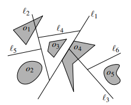
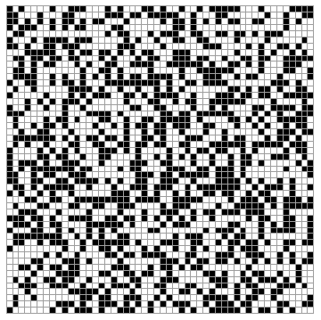
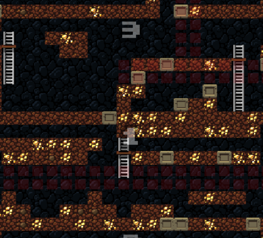
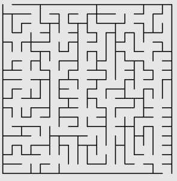
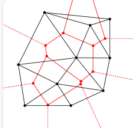
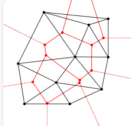
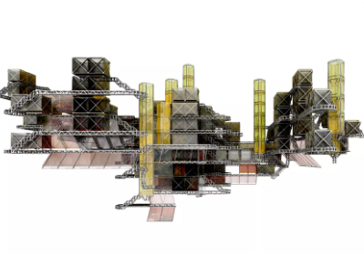
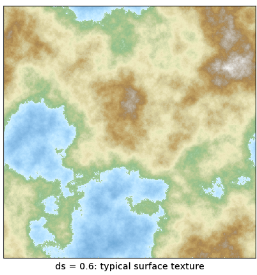
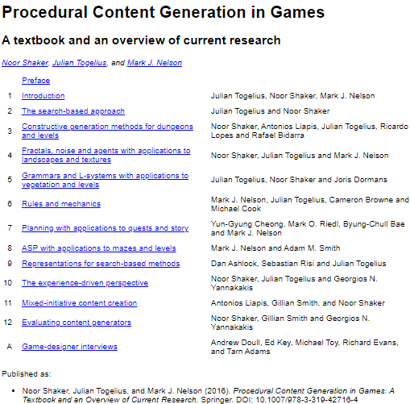

v.
Overview
- Introduce the history of PCG
- Explain what PCG is and show some examples
- Discuss the algorithms used in practice for PCG
What is PCG?
What is PCG?
- Procedure: using algorithms/rules/computers to ...
- Content: stuff (levels, assets, music, movie, pictures, etc.)
- Generation: making stuff
PCG refers to creating game content automatically, through algorithmic means.
$\qquad\qquad\qquad\qquad \text{---}\text{---}$ Togelius, Yannakakis, Stanley, Browne
PCG should ensure that from a few parameters, a large number of possible types of content can be generated.
$\qquad\qquad\qquad\qquad\qquad\qquad\qquad\qquad\qquad\qquad \text{---}\text{---}$ Doull
Why PCG?
- PCG is a way to overcome the limited human imagination
- Has been used in lots of morden (and old school) games
- Helps designer at design phase
- Generates contents at runtime
PCG is a family of techniques, algorithms, and procedures used for generating contents in an automated way rather than manually.
Why PCG? (2)
- Historically for saving spaces
- PCG was born to compress data
- No space to store pre-made artworks and data
- Nowadays:
- Reduce cost
- Increase playability
- Some games relies on unpredictable content as part of the design
PCG $\not =$ Randomness
- Although some (most) PCG methods use randomness
- PCG is NOT randomness
- There are PCG methods that don't use randomness (fractals, simulations)
- There are random processes that wouldn't be PCG (shuffling a deck in card game)
- Randomness in PCG is generally constrained to produce content
History of PCG in Games (1)
- 1979: Akalabeth: World of Doom is (maybe) the first game to use a seed to generate the game world
History of PCG in Games (2)
- 1980: Rogue, the real ancestor of the rogue-like games used PCG to create a fully replayable game experience
- All the rogue-like games from then are one of the main game genres to use PCG in modern video games
A PCG generated game world in the 1980 version of Rogue
History of PCG in Games (3)
- 1985: The Sentinel has 10,000 different level stored in only 48-64 kilobytes
History of PCG in Games (4)
- 1985: Elite used PCG to generated an universe with 8 galaxies, each has 256 solar systems. Each solar system has from 1 to 12 planets, each planet has a space station in its orbit, a proper name, a personal terrain, prices of commodities, and local details.
- Everything has been contained in a 32Kb home PC, both code and contents.
The original algorithm is open source and can be found:
http://www.iancgbell.clara.net/elite/text/
A detailed explanation of the algorithm:
Algorithms for an Infinite Universe
History of PCG in Games (5)
- 1985: Elite Dangerous, the latest version, used PCG to generate 1:1 replica of the Milk Way with more than 400 billion star systems.
- If we assume 1kb per star system (very optimistic), the full system will occupy more than 400 Terabytes without PCG.
PCG in 1990's
- There's no too much new progress of PCG in 1990s
- Games were released using CDs, which enables the developers to store massive data by comparing to early 80s
- PCG were still in use, but mainly for:
- Provide improved replayability of a game
- Increase the amount of game contents in a way that is not possible to do manually
- Automate the designing process of game assets (e.g. rocks, trees, foliage, etc.)
History of PCG in Games (6)
- 1995: Diablo, one of the first games to introduce PCG and rogue-like games into the modern era
- Random dungeon layouts
- New! random item generation - never seen before in commercial video games
- RPG games started to use real-time PCG
History of PCG in Games (7)
- 2000s: commercial PCG tools started their businesses like SpeedTree and Dwarf's Fortress Engine
- 2009: Minecraft might be the root of modern hype for PCG
- PCG is now present in almost every non-FPS games
History of PCG in Games (8)
- PCG plays a more and more important role in modern game creations
- e.g. No Man's Sky (left) and Civilization VI (right)
PCG Techniques
PCG Techniques
PCG are widely used for generation levels and contents in games
- Binary space partitioning $\qquad\qquad\qquad\qquad\qquad\qquad\qquad\qquad\quad$
- Random walks
- Cellular automata
- Noise-based methods
- Grid-based methods
Most of these will have some examples and links for exploration
This is not an exhaustive list, there are much more to research
Some of them are a little bit intensive!
Binary Space Partitioning
- Divides a space into smaller regions by a partitioning plane
recursively - The choice of splitting planes greatly impacts the efficiency
of the tree - Enables efficient spatial queries like point containment, ray tracing, and collision detection
- Demos
- Binary Space Partitioning Trees
- Binary Space Partitioning
- Binary Space Partitioning Tree Tutorial
- Binary Space Partitions Lecture
- How to Use BSP Trees to Generate Game Maps
Cellular Automata
- States set (usually 2 or more)
- Have a rule defined, e.g. If at least 4 of the neighbours $\qquad\qquad\qquad\qquad\>$
are alive, cell stays alive, otherwise dead - Used for cave/natural-like environments
- Demos
- The Cellular Automaton Method for Cave Generation
- Mapgen: Cellular Automata
- Cellular Automata Method for Generating Random Cave-Like Levels
Cellular Automata Pseudocode Example
function cellularLogic(r,c,clean) {
var numWalls = countAround(r,c,1,1);
var numWalls2 = countAround(r,c,2,2);
if (isWall(r,c)) {
if (numWalls >= 3) {return 1; } return 0;
} else {
if (!clean) { if (numWalls >=5 || numWalls2 <=2) {return 1;} }
else { if (numWalls >= 5) {return 1;}}
}
return 0;
}Grid-based Methods
- Split the map into blocks
- Pick (or generate) a template for each block$\qquad\qquad\qquad\qquad\qquad\qquad$
- Place template on grid
- Demos
- Spelunky Generator Lessons (1)
- Spelunky Generator Lessons (2)
- The World Generation of Minecraft
Noise-based Methods
- Generate noise (usually gradient noise)
- Interpret noise as values
- Place template on grid
- Demos
- How Minecraft Generates Worlds
- How Exactly Does Minecraft World Generation Work?
- The World Generation of Minecraft
Maze/Dungeon Generation



- Mazes and dungeons are typical scenarios of the eldest
form of PCG - Am important characteristic of game play
- Has been studies in mathematics for several decades $\qquad\qquad\qquad\qquad$
- There are lots of algorithms around this topic:
- Prim's Algorithm
- Random Traversal
- Randomised Depth-First
- WIlson's Algorithm
- Voronoi-Delaunay Triangulation
L-System
- An L-system (Lindenmayer system) is
a parallel
rewriting system and a type of formal grammar - L-systems are based on rewriting rules and string
manipulation - Commonly used to generate fractal patterns, $\qquad\qquad\qquad\qquad\qquad\quad$
plants, and now buildings and cities - Parametric L-systems use variables to control the
behavior of productions - L-System
- Intro to L-System
- The Beauty of Plants
- Designing with L-System Series Papers
L-System
seed: A
rules:
rule #1: A <- AB
rule #2: B <- A
t = 0: A
t = 1: AB (rule #1)
t = 2: ABBA (rule #1 and rule #2)
t = 3: ABBABAAB
t = 4: ABBABAABBAABABBA
...Diamond-Square Algorithm
- A type of midpoint displacement algorithm
- First introduced by Fournier, Fussell and Carpenter at SIGGRAPH in 1982
- Has two steps: the diamond step and the square step
- The diamond step: For each square in the array, set the midpoint of that square to be the average of the four corner points plus a random value
- The square step: For each diamond in the array, set the midpoint of that diamond to be the average of the four corner points plus a random value
Diamond-Square Algorithm (2)
- The small error to the middle height depending on the size
of the area (roughness) - Iterate and subdivide each rectangle into smaller ones until
no noticeable differences were found, then stop and render - Diamond-Square Algorithm
- The Diamond Square Algorithm
- Procedural Terrain Generation: Diamond-Square
- Diamond-Square Algorithm Explanation and C++ Implementation$\qquad\quad\>$
More Algorithms on Level Generation
- There are many other algorithms exists for level generation:
- Context-free grammars (Stanford Lecture Slides )
- Reinforcement learning(Paper)
- Genetic algorithm (Paper)
- The player doesn't care about too much details about your fancy PCG algorithm generated contents
- e.g. you can generated billions of trees, weapons, rooms, who care about the leaf is 10 pixels or 15 pixels?
- PCG is not a substitute for game-play
- Adding PCG to your game won't automatically make it good
Challenges of PCG
- Satisfies a high number of constraints (e.g. full connectivity)
- finding these constraints and tweaking unintuitive parameters of the system can degenerate into trail and error approach
- Produces aesthetically pleasing results
- levels can become too similar to each other
- Maximise the expressive range (variety of the results)
- can decrease co-op multiplayer playability
- May require spending too much time on inventing a "fancy" level generator
PCG: The Book
- Procedural Content Generation in Games:
A Textbox and Overview of Current Research - by Noor Shaker, Julian Togelius, and Mark Nelson $\qquad\qquad\qquad\qquad\qquad$
- Published by Springer (2016)
- A legal online version is available
- The PCG Book
Questions?